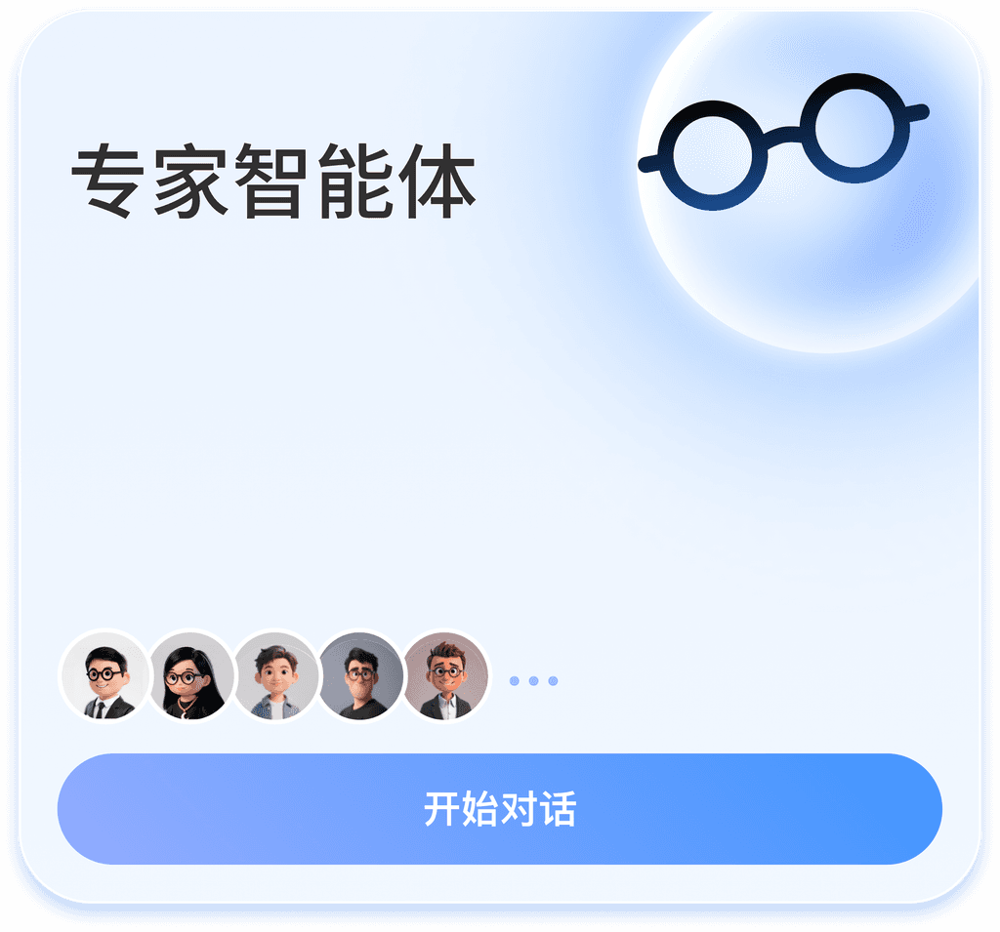
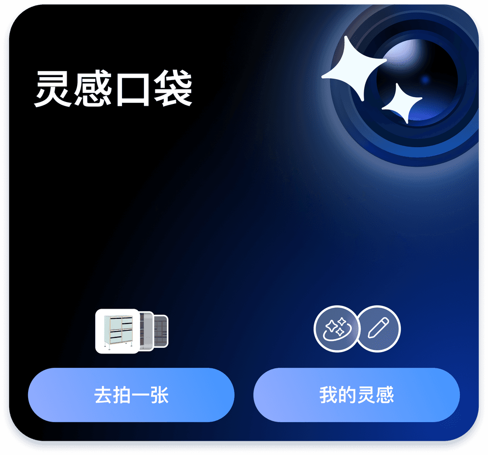
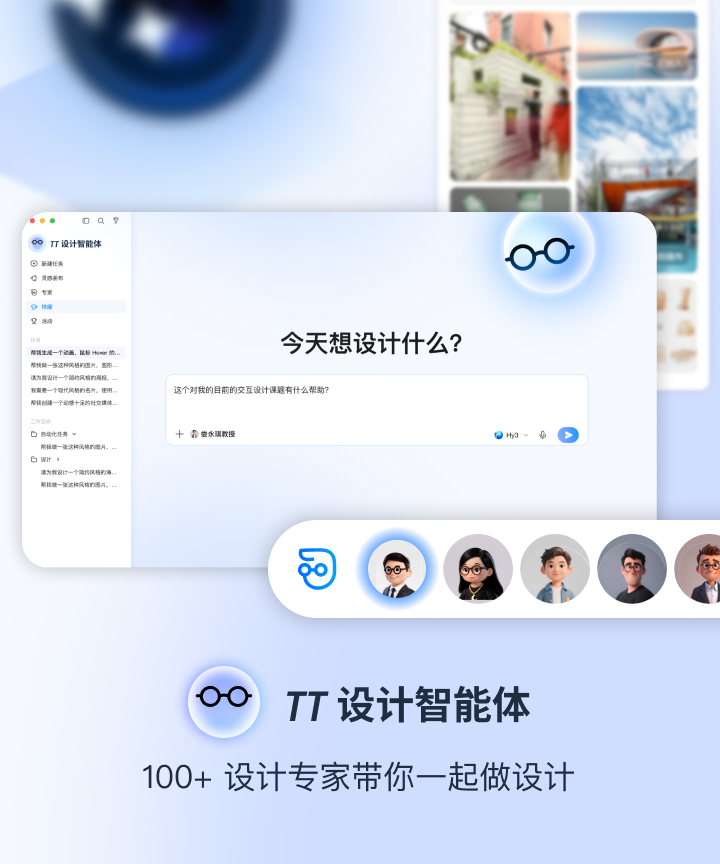
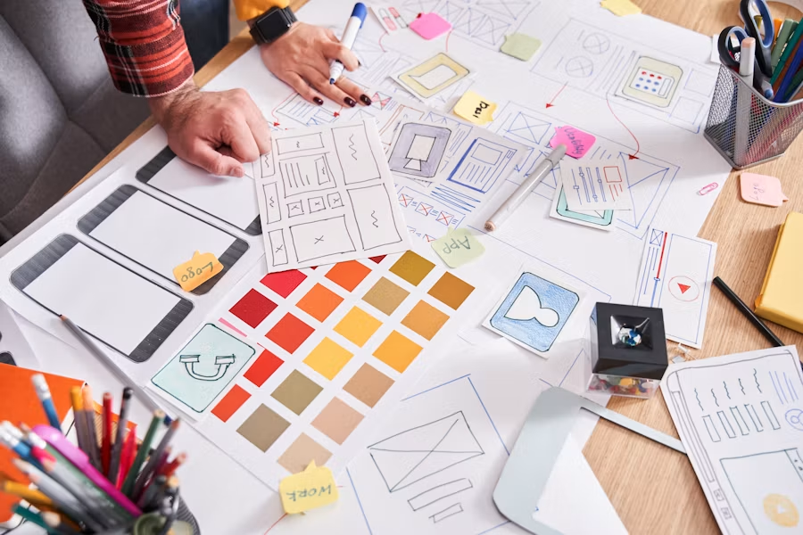
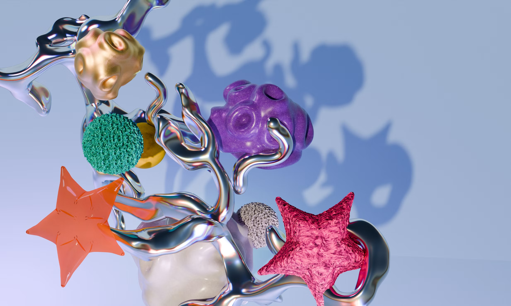
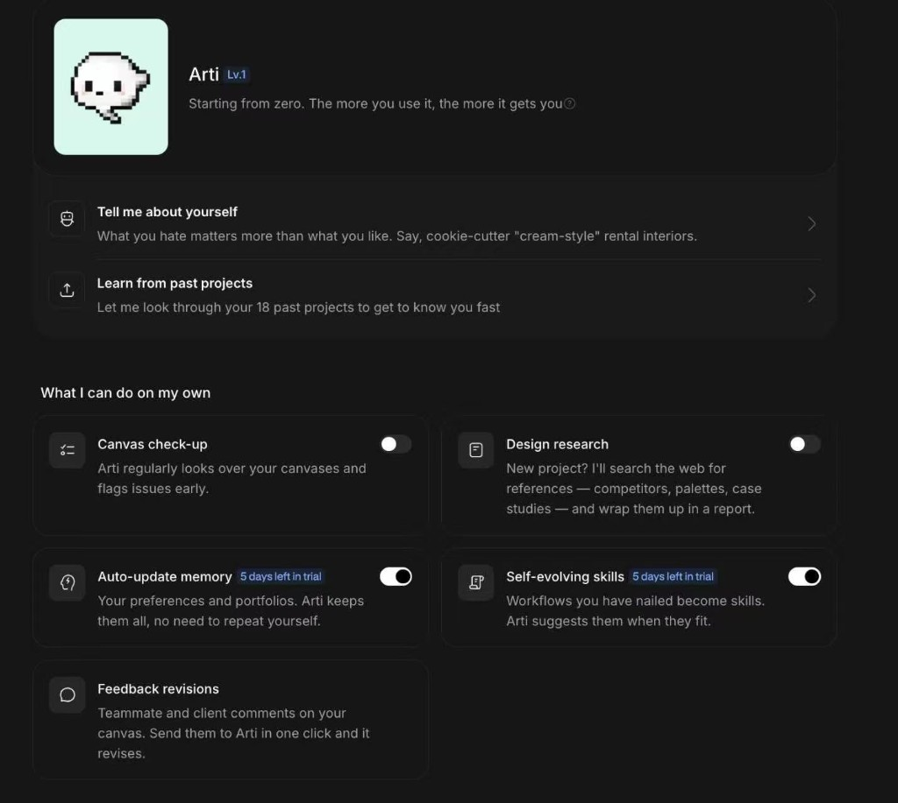
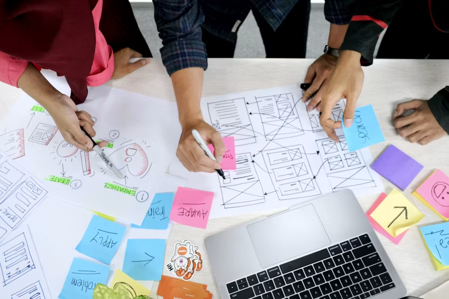
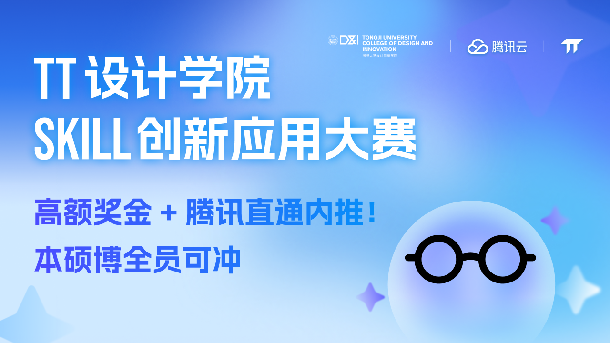
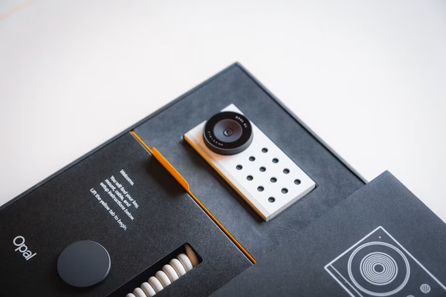

Education edition
Help teachers guide projects and students show, discuss, and revise their thinking.
Ormino.AI
A multi-agent platform for human–AI collaborative design learning. Think ideas through, make them real, and keep needs, evidence, choices, and work connected.
Give every idea the depth of thought.
Trusted in classrooms and studios across Asia






Configure specialists around one design problem. They bring different perspectives; your taste, preferences, and choices decide where the work goes.
Meet the agents →Goals, needs, references, creative branches, and decisions stay linked — with sources and context. Branch an idea, merge two concepts, and connect images back to the discussion that shaped them.
Explore the canvas →
Capture the methods that work — research, critique, proposal structure — and call them when they fit. Expertise shows up as task quality, not titles on a wall.
Browse methods →
Tell it what you refuse. Let it learn from past projects. Turn on canvas check-ups, memory, and self-evolving skills — so you stop repeating yourself.
Set up Arti →One project. One continuous trail of thinking.
Surface goals, conflicts, and constraints before you commit to a look.
Keep references, research, and alternative directions on one canvas.
Turn the chosen direction into work — while the rationale stays attached.
Bring evidence and choices into the client or critique conversation.
Feed feedback back into judgment — and save methods for next time.
Help teachers guide projects and students show, discuss, and revise their thinking.

From client brief to directions, proposals, and revisions — without losing the why.
Needs, evidence, choices, and creative work stay connected inside every project.
Agents explore. People decide. Taste and critique remain the source of direction.
Ormino.AI is a multi-agent platform for human–AI collaborative design learning — so proposals grow with the thinking, and people leave a project able to explain what they learned.
Give every idea the depth of thought.
A human–AI collaborative design workspace that makes design thinking visible, participatory, and editable. Users set goals; agents contribute perspectives; people keep judgment in control.
Midjourney, FLORA, Figma, and Gamma are strong at generation, canvases, and presentations. Ormino focuses on the stretch that often breaks: connecting needs, evidence, trade-offs, and human judgment into a decision structure you can return to and revise.
Design students and teachers in the Education edition; independent designers and studios in the Practice edition. The shared base keeps project rationale intact in both rhythms.
Built from the TT DesignX private-beta desktop product (macOS & Windows). Web and mobile are in development. Overseas early access opens first through DesignX and partner pilots.
Get early access to Ormino.AI — and keep the thinking that makes the work yours.